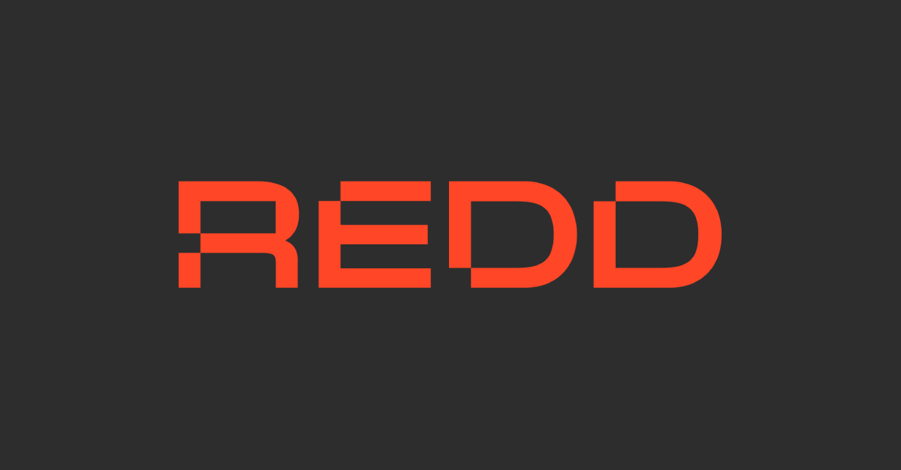

Curriculum Vitae
Mikołaj Paweł Sapek
Email: miki.sapek@gmail.com
Phone: +48 507 535 615
Location: Copenhagen, Denmark
LinkedIn: linkedin.com/in/mikołaj-paweł-sapek-8b5633267
Professional Profile
Multidisciplinary and data-driven junior professional with hands-on experience building AI-powered workflows, automating research and marketing processes, and integrating APIs using n8n, Make.com, and Python.
Known for turning messy, unstructured data into clear, actionable insights; combines technical skill with strong interpersonal and commercial intuition shaped by instructor and retail roles.
Passionate about political marketing, analog photography, and emerging tech; traveled to 42 countries.
Education

.svg.webp)


- Master in Business Administration & Data Science, Copenhagen Business School, Copenhagen, Denmark
September 2025 – Present - Bachelor in Management & Artificial Intelligence, Kozminski University, Warsaw, Poland
October 2022 – June 2025
Graduated with distinction (thesis grade: 5.0 / A)
Thesis: "The Impact of Third-Force Candidates on Voter Turnout in the 2020 and 2015 Polish Presidential Election and a Forecast for 2025." - Student Exchange — Business & Management, Konkuk University, Seoul, South Korea
August 2024 – December 2024 - Global Summer Program — Asia Pacific Business, Singapore Management University, Singapore
July 2025
Work Experience
REDD — Real Estate Digital Data 
AI & Automation Intern
Apr 2025 – Jun 2025 · Warsaw, Poland (Hybrid)
- Built internal automation workflows using n8n, Make.com, and OpenAI API to extract, analyze, and structure real estate news data for research and marketing teams
- Developed a daily AI-powered parser that reduced news analysis time from 36 hours to 20 minutes by integrating data into a shared Notion database
- Worked cross-functionally across Research, Customer Service, and Marketing to streamline data flows and documentation
Freelance Instructor
Certified Ski & Windsurfing Instructor
2020 – Present · Poland, Italy, Austria (Seasonal)
- Conducted training for diverse client groups and nationalities; certified by SITN; pursuing Euro Instructor certification; strengthened communication and adaptive teaching skills
Sportano — Sporting Goods Retailer
Sales Specialist
Jan 2024 – Jul 2024 · Warsaw, Poland
- Advised customers on sports equipment tailored to sport and skill level; delivered results in a target-driven environment; honed client communication and negotiation
Technical Skills
- Programming & Scripting: Python (AI workflows, data parsing), R (quantitative analysis), JavaScript (API interaction, DOM parsing)
- Automation & Low-code Platforms: Advanced n8n, Make.com, Notion (database scripting, custom dashboards), Google Apps Script
- Data & Network Visualization: Tableau, Gephi (network graphs), Notion dashboards, Google Sheets
- API Integration & Parsing: REST APIs, webhooks, Snitcher, Google Analytics (GA4), custom scrapers using CSS selectors & JSON
- AI & Prompt Engineering: OpenAI, Claude, Gemini — workflow design, content generation, data labeling, enrichment
Activities & Interests
- Global travel & cultural immersion: visited 42 countries; lived in South Korea and Singapore; strong intercultural awareness and adaptability; passion for cultural exchange
- Outdoor sports & high-performance mindset: former competitive alpine skier (12 years); certified ski and windsurfing instructor; active in climbing and tennis; resilience under pressure
- Creative & Visual: analog photography (fully manual on film); values patience, detail, and narrative framing; interest in visual storytelling
- Political marketing & behavioral insights: fascinated by behavioral data and how messaging, digital tools, and AI shape public opinion and decisions
Soft Skills, Certificates & Languages
Soft Skills
Analytical thinking; adaptability & independence; cross‑cultural communication; teamwork & client engagement; time management & ownership
Certificates & Licenses
- IELTS English Certificate — C1
- Ski Instructor Certification — SITN
- Windsurfing Instructor Certification — PSW
- Yacht Sailing License
- PADI Open Water Diver
- Driving License — Category B
Languages
- Polish: Native
- English: Fluent (C1), IELTS Certificate
GDPR Consent
"I hereby consent to my personal data being processed for all recruitment purposes (95/46/EC — GDPR)."